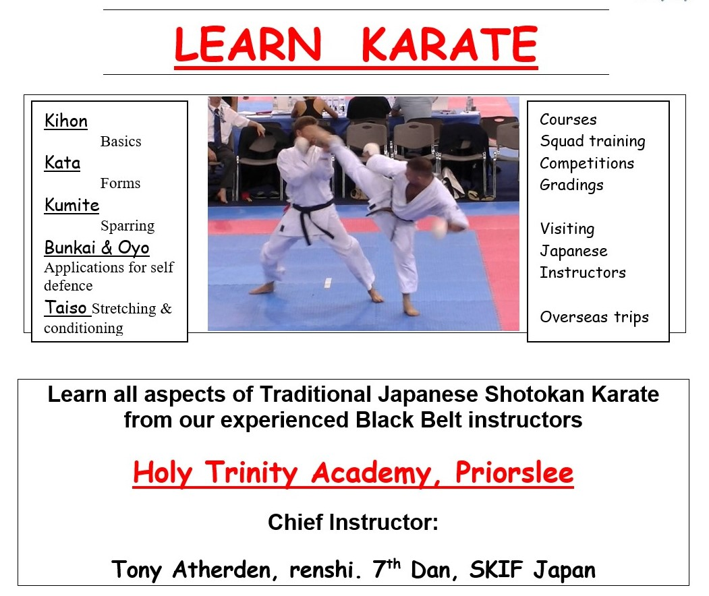
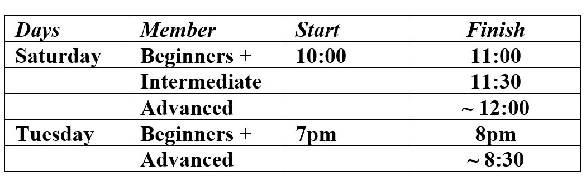

 Our current club schedule (subject to updates):

Traditional Karate-do is a form of Japanese Budo Everything you need to know about Budo: is here 😺
However, Traditional Karate-do does not exclude Competitions 😼 ' Do your best at all times, win with modesty, accept defeat gracefully, and constantly exhibit self-control.' {See Article 3 of the Budo Charter referenced above}
Olympic Sport Karate (free fighting) information:
is here 🙀
You can contact us :
By email at: Tora Shinkai - Or phone / text: (+44) 07841 839372
三神空手道場
We are affiliated: in the UK to SKKIF in Europe to SKIEF in Japan to SKIF 國際松濤館空手道連盟 and Zen Nihon Yudansha Renmei: 全日本有段者連盟